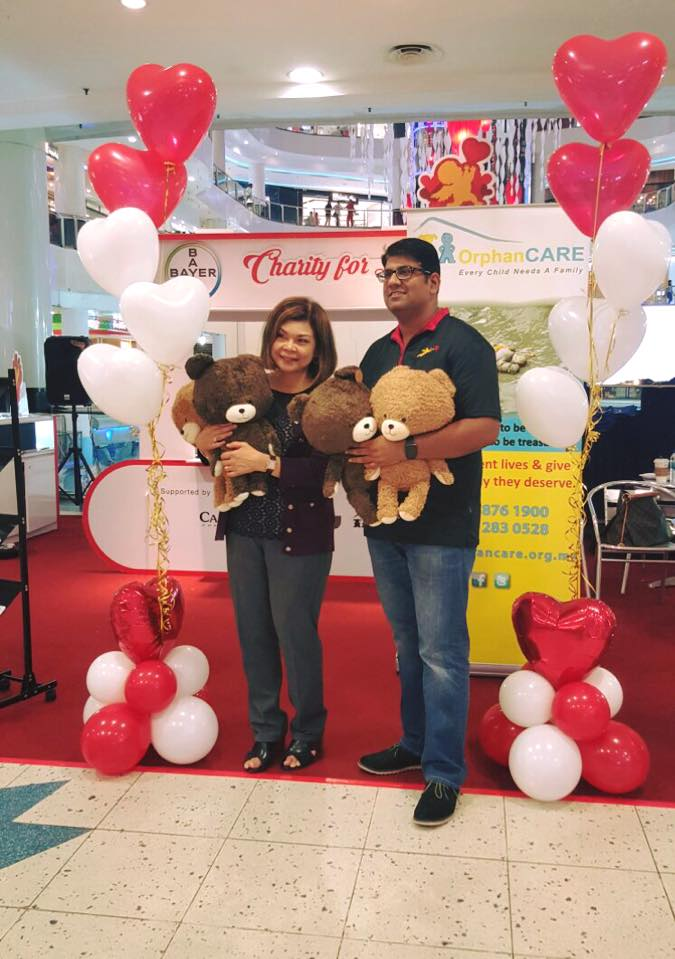
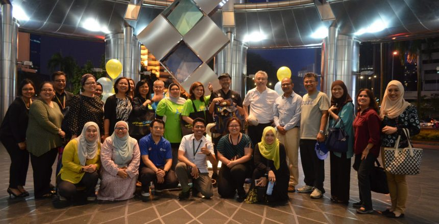
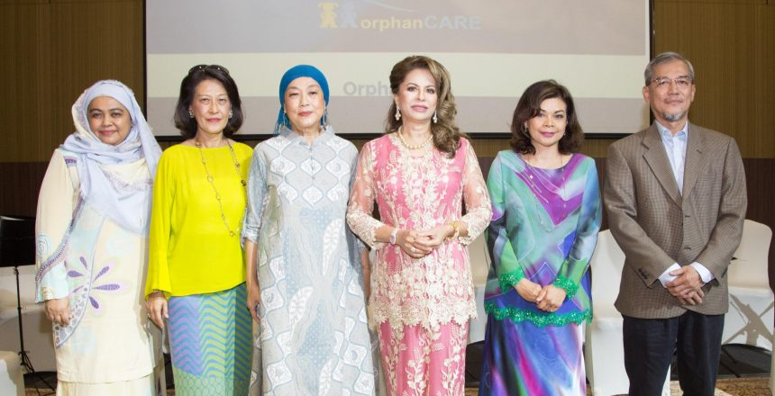
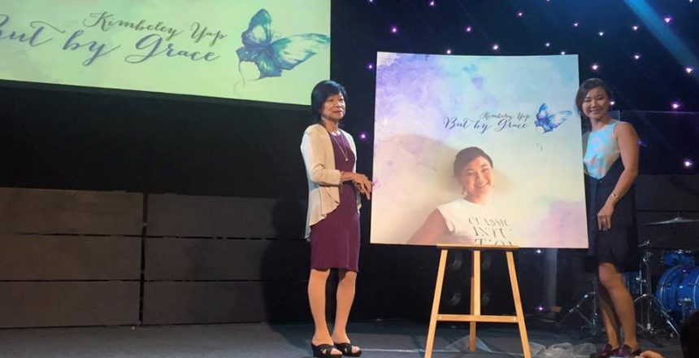
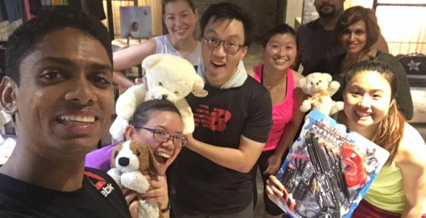
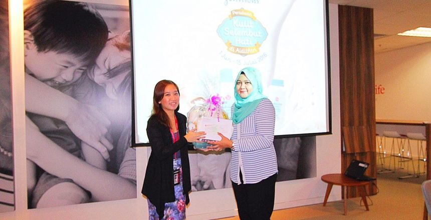

In February 2016

OrphanCare Foundation teamed with Bayer Healthcare Malaysia to promote safe sex and good health. The campaign called Charity for Love was held in February 2016 at Sunway Pyramid Mall to coincide with Valentine Day celebrations and raised more than RM3,600.
In November 2016

Corporate director Imran Ahmad is hooked on walking. In November 2016 Imran raised RM20,000 by walking 177km from Ipoh to Kuala Lumpur in five days in an awareness raising effort for OrphanCare. He met many caring Malaysians on his journey and learnt to appreciate the hardship of people less fortunate.
Lauching of Orphancare official website

At our Hi Tea Fundraising event to celebrate Mother’s Day, OrphanCare Foundation announced its new website. www.orphancare.org.my is uncluttered, attractive and easy to navigate. Comedian Harith Iskander and a child orchestra led by renowned violinist Winnie Cheah performed for guests who included our Patron, HRH Sultanah Hajjah Kalsom D.K.
In July 2016

Meanwhile, Kimberley has donated 10% from the sale proceeds of her book But by Grace. Kimberley is a well-known Malaysian triathlon athlete. She launched her book in July 2016.
Free week of personal training

Noel Chelliah and wife Kimberley Yap are avid supporters of OrphanCare and each had a fundraising idea. Noel, a professional fitness trainer, is offering a free week of personal training to anyone who donates a toy to a child adopted through OrphanCare. Noel targets collecting 70 toys by the next OrphanCare Tea Party. Contact us if you’re keen to help Noel.
In September 2016

Three winners of Johnson & Johnson’s Peraduan Kulit Selembut Hati Johnson contest in September 2016 selected OrphanCare Foundation as their charity of choice. Johnson & Johnson contributed RM6000 on behalf of the winners.